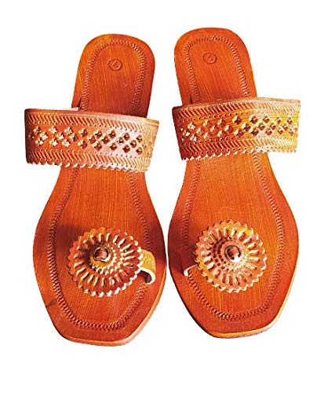

Men Kolhapuri Chappal |
Kolhapuri chappals are Indian decorative hand-crafted and braided leather slippers that are locally tanned using vegetable dyes. Kolhapuri Chappals or Kolhapuris as they are commonly referred to are a style of open-toed, T-strap sandal, but also braided leather Mules or braided leather shoe type designs are also common.
Kolhapuri Chappal Line
|
Women Kolhapuri Chappal |
The Kolhapuri chappal (footwear) is the world famous handcrafted footwear which was initially designed in the Kolhapur town of Maharashtra state in India. These handmade leather footwear are tanned by using vegetable dyes. The traditional designs of the Kolhapuri footwear are very famous not only in the rural areas of Maharasthra but also getting increasingly known across the globe. The Kolhapuri isn't limited to Kolhapur though, it is also referred by different names depending upon the place it was manufactured; places such as Kapashi, Paytaan, Kachkadi, Bakkalnali, and Pukari.
Kolhapuri Chappal Line
|